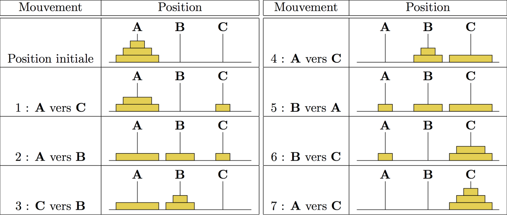

Exercice 11
La tour de Hanoï
Explication
La tour de Hanoï est un puzzle mathématique avec 3 barres ( A, B et C) et un nombre N de disques.
L'objectif est de déplacer entièrement la pile de la barre A jusque la barre C en obéissant aux règles suivantes :
- Un seul disque peut être déplacé à la fois.
- Chaque déplacement consiste à prendre le disque supérieur d'une des piles et à le déplacer au-dessus d'une autre pile, c'est-à-dire qu'un disque ne peut être déplacé que s'il s'agit du disque le plus haut d'une pile.
- Aucun disque ne peut être placé sur un disque plus petit.
Exercice
Créez une fonction permettant l'entré d'un niveau (nombre de disques) ainsi que des différentes destinations (A, B et C) et lancez le script au clic sur le bouton.
Pour le niveau de départ, utilisez le chiffre 4.
